Pizze n°1
Au feu de bois, pâte maison
- Charcuterie corsecoppa, champignons, olives
- Bresaola & roquettecopeaux, huile d'olive
- Anchoiscâpres, olives noires
- Verdurelégumes grillés, champignons
- Noms & prix exacts[À CONFIRMER]
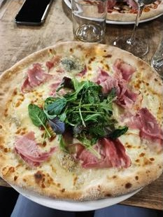
Benvenuti — pizzeria corse au feu de bois
« La petite maison ». Des pizzas qui sortent du feu, de la charcuterie corse posée dessus, et une salle où l'on reste plus longtemps que prévu. À Carquefou, zone de la Fleuriaye.
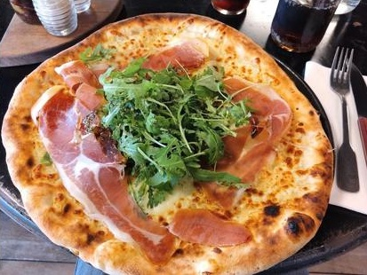
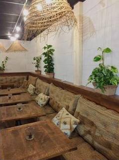
Murs de brique peinte à la chaux, plafond noir, tables en bois brut, banquettes en toile de jute et plantes qui grimpent : A Casetta n'a rien d'un décor. On y mange des pizzas généreuses passées au feu, des burgers au pain noir et des assiettes à l'ardoise — avec l'accent corse dans l'assiette.
Matt & l'équipe
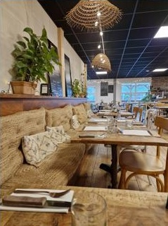
u focu — le feu
Regardez les bords : gonflés, tachetés, marqués par la flamme. C'est la signature d'une cuisson vive, jamais la même d'une pizza à l'autre. Coppa, champignons, roquette ou anchois — tout passe par le feu.
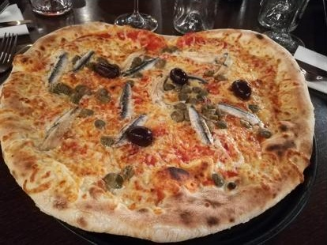
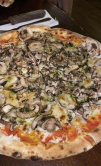
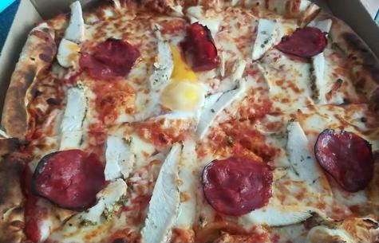
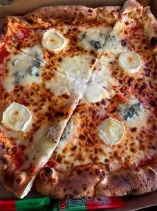
manghjà
bè
— bien manger. Le seul mot d'ordre de la maison.
a tavula — à table
Aperçu de ce que l'on voit passer en salle. Carte complète, tarifs et suggestions du moment : [À CONFIRMER] — renseignez-vous au 02 40 30 81 56.
Au feu de bois, pâte maison

Pain noir maison, frites servies en passoire
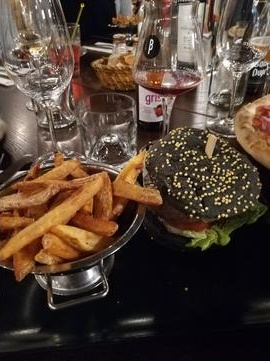
Assiettes servies sur ardoise noire
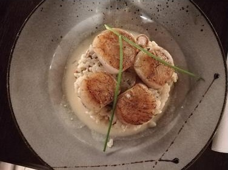
Pour finir en douceur
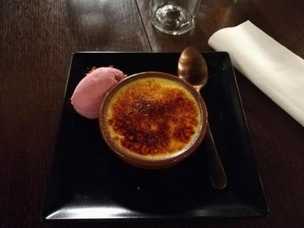
in casa — chez nous
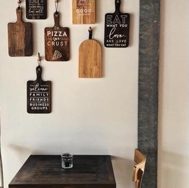
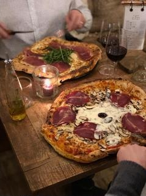
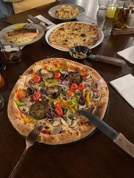
On pousse la porte pour une pizza,
on reste pour la maison.
u vucabulariu — les mots de la maison
venite — venir
Zone de la Fleuriaye, à dix minutes du centre de Carquefou et vingt de Nantes. Parking sur place.
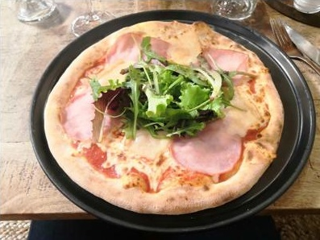